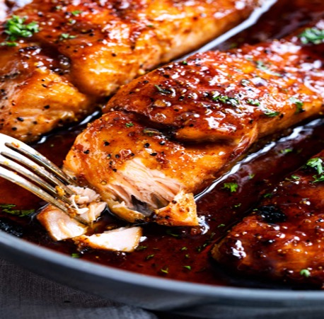

Honey Salmon

One of my all time favorite go to recipes! For all my seafood lovers out there, this recipe is a home run hit. Whether preparing for family night, or it's date night and you want to spoil your special someone. Lets be honest, nothing beats a sweet and savory dish, with a bit of lemon added for that zesty flavour!
This simple and easy salmon recipe is the perfect one to go for as it can be done in as little as 20 minutes with minimal ingredients. This makes it a delicious recipe you cant beat! It's one of those recipes that if you make it once, it'll become a household staple in your weeknight dinners for life.
Ingredients
- 4 (6oz) salmon fillets
- 1/2 tsp salt
- 1/2 tsp black pepper
- 1 lemon sliced
- 4 garlic cloves minced
- 2 tbsp butter
- 3 tbsp soy sauce
- 2 tbsp lemon juice
- 1/2 cup honey
Instructions
- Pat salmon dry, then season with salt, and pepper.
- In a pan, heat butter and oil, then add garlic and cook them lightly and avoid burning them.
- Then add your soy sauce, honey and lemon juice to the pan.
- Now that you've cooked your garlic and added your sauces, its time to place the fillets, (skin side down if you have fillets with skin) and cook them for about 4-5 min per side on low to medium.
- While the salmon cooks, use a spoon to baste the salmon with the sauce that we added.
- Keep adding the sauce, and feel free to add more honey if you prefer a sweeter taste!
- Once you've cooked both sides for about 4-5 min, your fillets should be ready to serve!